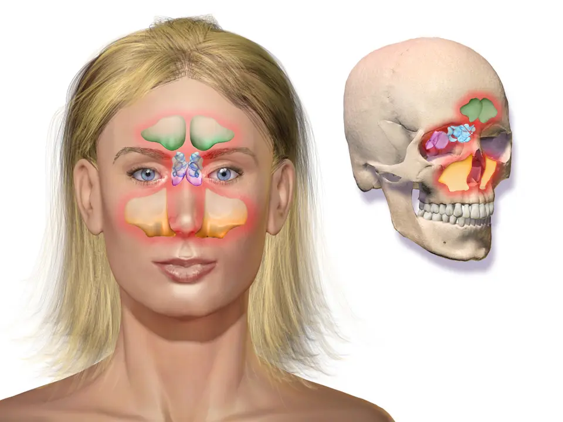
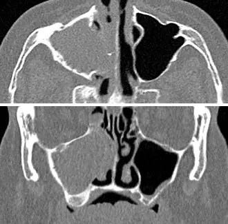

Ce diagnostic occupe le quatrième rang de fréquence dans la Phase A de l'écoulement nasal ; il ne porte aucun rang d'exclusion urgente, mais certains signes imposent d'écarter une tumeur.
DX.6 — Rhinosinusite chronique sans polypes
La rhinosinusite chronique sans polypes est une inflammation des sinus qui dure au moins 12 semaines et que l'on contrôle sans la guérirS1S4. Le médecin confirme l'atteinte par endoscopie ou scanner, puis il associe corticoïde nasal, rinçages salés et contrôle de l'observance, en suivant l'information professionnelle suisse (AIPS) pour les dosesS4AIPS 54189.
1. Définition
Le consensus européen EPOS (European Position Paper on Rhinosinusitis and Nasal Polyps) 2020 définit la rhinosinusite chronique de l'adulte par deux symptômes ou plus pendant 12 semainesS4. L'un d'eux est une obstruction nasale ou un écoulement nasalS4. Une endoscopie ou une tomodensitométrie (TDM) doit confirmer l'atteinte, et la forme sans polypes n'en montre aucun dans le méat moyen, au besoin après décongestionS4.
2. Épidémiologie (Suisse, puis Europe)
Le service d'oto-rhino-laryngologie (ORL) des HUG (Hôpitaux universitaires de Genève) estime que la rhinosinusite chronique touche jusqu'à 15 % de la populationS1. La polypose en représente au plus 3 %, ce qui laisse, par déduction, la forme sans polypes comme forme majoritaireS1. Les chiffres utiles, les comorbidités et le retentissement expliquent son quatrième rang dans la Phase A.
L'EPOS classe la rhinosinusite chronique en forme primaire ou secondaire, puis en forme localisée, souvent unilatérale, ou diffuse, toujours bilatéraleS4. Chaque forme se divise ensuite selon l'endotype, inflammation de type 2 ou non de type 2, qui oriente les traitementsS4. La comparaison des endotypes et la liste des formes secondaires relient ces mécanismes à l'examen, et la classification complète situe la forme sans polypes.
La perte d'odorat combine un mécanisme inflammatoire et une obstruction mécanique de la fente olfactive, ce qui explique qu'elle réponde parfois au traitement anti-inflammatoireS4. La douleur faciale isolée relève rarement d'une rhinosinusite chronique, et elle ne justifie alors aucune chirurgieS4.
Projection des sinus paranasaux sur la face
Ce schéma en couleurs de Blausen Medical projette les sinus enflammés sur le visage et sur le crâneS5.

Le lecteur doit d'abord chercher seul les structures sur le cliché brut (projection des sinus paranasaux sur la face).
La copie annotée (projection des sinus paranasaux sur la face) porte les repères que la lecture guidée explique.
Lecture guidée.
Le sinus frontal, en vert, explique une céphalée sus-orbitaire ; un gonflement frontal reste un signe d'alarme.
Les cellules ethmoïdales, en bleu, drainent vers le méat moyen, cible de l'endoscopie.
Le sinus sphénoïdal, en violet, siège en profondeur, et son atteinte produit une céphalée rétro-orbitaire.
Le sinus maxillaire, en orange, est le plus grand ; sa douleur augmente quand la tête se penche en avant.
Décision. La douleur d'un seul sinus, unilatérale et persistante, oriente vers une forme localisée et justifie un scannerS4.
La démarche suit le parcours de soins de l'EPOS : le patient décrit deux symptômes depuis plus de 12 semaines, puis le médecin recherche des signes d'alarme qui imposent un adressage immédiatS4. Sans alarme, un essai de rinçage et de corticoïde nasal précède l'endoscopie spécialisée si l'amélioration manque après 6 à 12 semainesS4. La démarche en tableau décrit chaque étape, du pharmacien au spécialiste.
L'anamnèse mesure la durée, car le seuil de 12 semaines sépare la forme chronique de la rhinosinusite aiguë, qui dure moins longtempsS4. Elle précise aussi les quatre symptômes cardinaux grâce aux questions ciblées et cherche les signes d'alarme de l'EPOSS4. Une poussée aiguë se juge selon d'autres critères, ceux de la rhinosinusite aiguë bactérienneS2.
Les questions sur l'allergie, comme éternuements, rhinorrhée aqueuse, prurit nasal et yeux qui pleurent, doivent être poséesS4. Le terrain et les traitements déjà essayés guident ensuite le choix des examens.
La rhinosinusite chronique sans polypes appartient au syndrome rhinosinusien persistant et bilatéralS4. Le tableau différentiel la sépare des rhinites, de la polypose et des causes unilatérales, et la comparaison avec les formes aiguës évite de confondre une rechute aiguë avec une maladie chronique.
Le diagnostic positif exige deux composantes : les symptômes pendant 12 semaines et une preuve objective par endoscopie ou scannerS4. La forme sans polypes se retient quand le méat moyen ne montre aucun polype, au besoin après décongestionS4. Les critères EPOS et la définition de la forme difficile à traiter rendent ce diagnostic reproductible. La liste de ce qui ne suffit pas évite les diagnostics portés par excès.
Contrôle insuffisant malgré une chirurgie adéquate, un corticoïde nasal et jusqu'à deux cures courtes d'antibiotique ou de corticoïde systémique dans l'année
L'endoscopie nasale reste l'examen clé du spécialiste, et le scanner reste l'examen de référence de l'imagerie sinusienneS4. On n'indique plus la radiographie standard des sinus, ni dans la forme aiguë ni dans la forme chroniqueS4. Les examens ciblés, l'interprétation chiffrée et la lecture d'un scanner donnent l'indication, le seuil et la conduite. Les mesures objectives complètent l'endoscopie au cabinet du spécialiste.
Scanner des sinus en coupes axiale et coronale
Ces coupes de tomodensitométrie montrent un sinus maxillaire droit comblé face à un sinus gauche aéréS6. L'auteur les légende « sinusite chronique », alors que son anamnèse décrit 3 semaines de symptômesS6.

Le lecteur doit d'abord chercher seul les structures sur le cliché brut (scanner des sinus en coupes axiale et coronale).
La copie annotée (scanner des sinus en coupes axiale et coronale) porte les repères que la lecture guidée explique.
Lecture guidée.
Le sinus maxillaire droit apparaît comblé sur la coupe axiale ; son contenu a la densité des tissus mous.
Le sinus maxillaire gauche reste noir, donc aéré, ce qui sert de témoin.
La coupe coronale confirme le comblement droit jusqu'au plancher de l'orbite.
Le sinus maxillaire gauche reste aéré en coronal ; la comparaison des deux côtés fonde la lecture.
La cavité nasale et les cornets se lisent au centre ; le complexe ostioméatal se cherche en dehors du cornet moyen.
Décision. Un comblement unilatéral impose de chercher une forme localisée, dentaire, fongique ou tumorale, et le diagnostic chronique exige 12 semaines de symptômesS4.
L'arbre suit le parcours de soins et le schéma de la forme diffuse de l'EPOSS4. On le parcourt de haut en bas, et sa version en tableau précise, nœud par nœud, la réponse, la conduite et le délai.
Si un signe d'alarme ou une atteinte unilatérale existe, alors le médecin adresse immédiatement et fait réaliser un scannerS4.
Si deux symptômes durent 12 semaines sans alarme, alors il prescrit rinçage et corticoïde nasal et vérifie la techniqueS4.
Si l'amélioration manque après 6 à 12 semaines, alors il adresse au spécialiste pour une endoscopieS4.
Si la forme diffuse persiste malgré le traitement médical, alors le spécialiste demande scanner et bilan d'endotype avant de discuter la chirurgieS4.
11. Prise en charge selon les recommandations suisses
11.A But
Le traitement ne guérit généralement pas la maladie, mais il contrôle les symptômes et préserve la qualité de vieS1. L'EPOS fixe donc comme objectif une maladie contrôlée, évaluée sur le dernier moisS4.
11.B Moyens
Les corticoïdes locaux et le sérum salé restent la base du traitement de la forme diffuse et bilatéraleS4. Les HUG décrivent les mêmes moyens : traitements anti-inflammatoires locaux à base de corticoïdes et rinçages nasauxS1. Le traitement structuré précise molécule, dose, durée, contrôle et critère d'échec, et le niveau de preuve européen classe les options. Les fenêtres sur le rinçage, le corticoïde nasal et les options après échec détaillent les choix du spécialiste.
Le contrôle de la maladie s'évalue à chaque visite selon la grille de l'EPOS, qui distingue maladie contrôlée, partiellement contrôlée et non contrôléeS4. La grille de contrôle et la surveillance datée donnent les seuils et la conduite.
11.D Pronostic
La chirurgie élargit les cavités sans guérir la maladie, mais elle facilite les sprays et les rinçagesS1. Après une chirurgie, le traitement médical approprié doit continuer, car la maladie reste chroniqueS4.
Corticoïde nasal, traitement de base de la forme diffuse selon l'EPOSS4.
Indication AIPS
L'AIPS couvre la rhinite allergique, les « polypes nasaux chez les adultes dès 18 ans » et la rhino-sinusite aiguë non compliquée ; la forme chronique sans polypes n'y figure pasAIPS 54189.
Dose AIPS
Dans la rhinite allergique, l'AIPS prévoit « 2 pulvérisations de spray dans chaque narine » une fois par jour, soit 200 µg par jourAIPS 54189.
Durée
L'AIPS indique qu'aucune atrophie de la muqueuse n'a été observée « après 12 mois de traitement avec Nasonex »AIPS 54189.
Contre-indications
L'AIPS cite l'« Hypersensibilité au principe actif ou à l'un des excipients conformément à la composition »AIPS 54189.
Grossesse
L'AIPS précise que le traitement par corticoïdes nasaux « pendant la grossesse et l'allaitement n'aura lieu qu'en cas d'absolue nécessité »AIPS 54189.
Allaitement
La même phrase de l'AIPS limite l'usage pendant l'allaitement aux cas d'« absolue nécessité »AIPS 54189.
Piège
L'AIPS demande un examen plus poussé des « polypes unilatéraux d'aspect inhabituel ou irrégulier »AIPS 54189.
Décongestionnant que l'EPOS déconseille en général dans la forme chronique, sauf ajout temporaireS4.
Indication AIPS
L'AIPS vise notamment l'aide « pour faciliter l'écoulement des sécrétions en cas d'inflammation des sinus »AIPS 24926.
Dose AIPS
L'adulte reçoit « 1 pulvérisation dans chaque narine » du spray 0,1 % et ne dépasse pas 3 applications par jourAIPS 24926.
Durée
L'AIPS limite l'usage à une semaine, car un usage plus long peut entraîner une rhinite médicamenteuseAIPS 24926.
Contre-indications
L'AIPS exclut notamment la « Rhinite atrophique » et les « Patients atteints de glaucome à angle fermé »AIPS 24926.
Grossesse
Selon l'AIPS, le produit « ne doit pas être utilisé par précaution en cours de la grossesse »AIPS 24926.
Allaitement
Selon l'AIPS, il « doit être utilisé uniquement sur prescription médicale » pendant l'allaitementAIPS 24926.
Piège
Dans une maladie qui dure des mois, ce produit ne remplace jamais le corticoïde nasalS4.
12. Prévention
L'EPOS place l'éviction de la fumée de tabac au centre de la prévention primaire et il demande de considérer allergie, asthme et refluxS4. Le diagnostic précoce et le choix du traitement optimal portent la prévention secondaire, et la revue de la technique soutient la prévention tertiaireS4. Le tableau de prévention réunit ces mesures.
La forme chronique exige 12 semaines de symptômes et une preuve endoscopique ou radiologiqueS4.
Les symptômes seuls surestiment la maladie : 5,5 à 28 % contre 3 à 6 % avec endoscopie ou scannerS4.
Corticoïde nasal et rinçage salé forment la base, et l'antibiotique n'appartient pas au premier recoursS4.
La mométasone n'a pas l'indication de la forme sans polypes dans l'AIPS, ce que la prescription doit savoirAIPS 54189.
Un symptôme unilatéral, un saignement ou des croûtes imposent un scanner pour écarter une tumeurS4.
La chirurgie élargit les sinus sans guérir, et le traitement médical continue ensuiteS1S4.
14. Pièges et questions fréquentes à l'examen fédéral suisse
Le premier piège retient une rhinosinusite chronique sur des symptômes seuls, alors que l'EPOS exige endoscopie ou scannerS4. Le deuxième piège consiste à répéter les cures d'antibiotiques, ce que le parcours de premier recours déconseilleS4. Les questions d'entraînement reprennent ces pièges, rédigés comme à l'examen fédéral.
Ces questions préparent à l'examen sans reprendre aucun énoncé officiel.
Sources
Toutes les sources ont été lues le 13.11.2026 (Europe/Zurich) ; la date propre de chaque document figure dans sa ligne.
[S1] Hôpitaux universitaires de Genève (HUG), Service d'oto-rhino-laryngologie et de chirurgie cervico-faciale. Rhinosinusite aiguë et rhinosinusite chronique, page mise à jour le 23.04.2025, lue le 13.11.2026. https://www.hug.ch/orl-chirurgie-cervico-faciale/rhinosinusite-aigue-rhinosinusite-chronique
[S2] Société suisse d'infectiologie (SSI), Berger C, Boillat Blanco N, Albrich W, et al. Directive « Sinusite bactérienne aiguë », validée le 09.07.2024, valable jusqu'au 15.12.2026, lue le 13.11.2026. https://ssi.guidelines.ch/guideline/2410/fr
[S3] Institut bernois de médecine de famille (BIHAM), Université de Berne. Fiche informative sur la sinusite aiguë / rhinosinusite aiguë, version 2.9.24, lue le 13.11.2026. https://www.biham.unibe.ch/unibe/portal/fak_medizin/ber_vkhum/inst_biham/content/e1551903/e1661931/e1669224/e1670302/files1728932/Ficheinformativepourdesmedecins-Sinusite_ger.pdf
[S4] Fokkens WJ, Lund VJ, Hopkins C, et al. Executive summary of EPOS 2020 including integrated care pathways. Rhinology 2020;58(2):82-111. doi:10.4193/Rhin20.601 (texte intégral lu le 13.11.2026 ; source européenne). https://www.rhinologyjournal.com/Documents/Supplements/EPOS2020_executive_summary.pdf
[S5] BruceBlaus, Blausen.com staff (2014). Blausen 0800 Sinusitis, schéma en couleurs, licence CC BY 3.0, Wikimedia Commons, consulté le 13.11.2026. https://commons.wikimedia.org/wiki/File:Blausen_0800_Sinusitis.png
[S6] Häggström M. CT of chronic sinusitis, coupes de tomodensitométrie, domaine public (CC0), Wikimedia Commons, consulté le 13.11.2026. https://commons.wikimedia.org/wiki/File:CT_of_chronic_sinusitis.jpg
[AIPS 54189] Swissmedic, information professionnelle (AIPS) Nasonex® spray doseur nasal (furoate de mométasone), n° 54189, mise à jour Avril 2021, lue le 13.11.2026. https://files.refdata.ch/simis-public-prod/MedicinalDocuments/05b407ec654940d49d928bbc54d8c05d-fr.html
[AIPS 24926] Swissmedic, AIPS Otrivin Rhume Classic® (xylométazoline), n° 24926, mise à jour Février 2025, lue le 13.11.2026. https://files.refdata.ch/simis-public-prod/MedicinalDocuments/7aa9b021e41e40498ad21af61c26b38a-fr.html
Le contenu reprend les sources citées ; il n'a pas été validé cliniquement par un médecin.